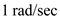
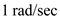

The high pass filter with natural modes at .
From the s-plane, the value of  is,
is,
The value of the real component is,
Consider the transfer function.
The high-frequency gain is,
Refer to Figure 16.16(a) in the textbook for the |T| characteristics and S-plane singularities of second order high pass filter.
For High pass filter, the transfer function is,
…… (1)
The high pass filter with natural modes at .
From the s-plane, the value of is,
The value of the real component is,
Consider the transfer function.
The high-frequency gain is,
Substitute 1 for  , 1 for and  for
, 1 for and  for  in equation (1).
in equation (1).
Therefore, the transfer function of the second order high pass filter for natural modes at  is,
is,  .
.